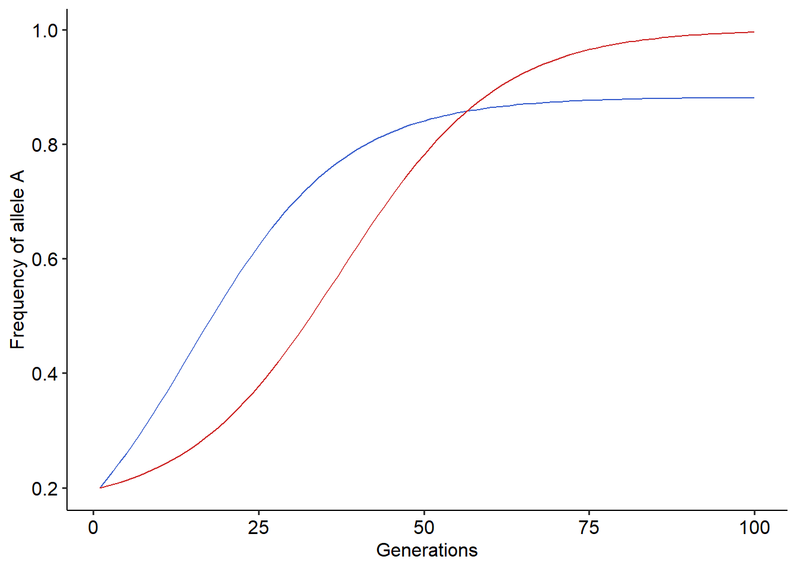

6 Exercise: Simulating coevolution mediated by a gene-for-gene or matching allele mechanisms
6.1 Simulating coevolution of victim-exploiter interactions
In first lecture of the second block we studied how we can use Wright’s equation to model the gene-for-gene or matching allele coevolution of two interacting species. Particularly, we studied the example in which one of the species is an exploiter and benefit from the interaction, while the other is a victim that is negatively affected by the interaction. Here, we will perform numerical simulations of this coevolutionary model to gain intuition about how different assumptions about the mechanism of coevolution and types of interaction can change the outcome of the coevolutionary dynamics. We will begin with the gene-for-gene model with one exploiter and one victim species. In this model, we assumed that the interaction between a victim and exploiter depends on two components. First, it depends on a matrix describing how individuals carrying alleles \(A_{x}\) or \(B_{x}\) of the victim species are affected by the individuals carrying alleles \(A_{y}\) or \(B_{y}\) of the exploiter species:
\[ \begin{array}{cc} & \begin{array}{cc} A_{y} && B_{y} \end{array} \\ \begin{array}{cc} A_{x} \\ B_{x} \end{array} & \left( \begin{array}{cc} \alpha_{AxAy} & \alpha_{AxBy} \\ \alpha_{BxAy} & \alpha_{BxBy} \end{array} \right)\end{array} \]
Second, it depends on the frequency of individuals carrying alleles \(A\) and \(B\) in the populations of the victim - \(p_{x}\) and \((1-p_{x})\) - and exploiter species - \(p_{y}\) and \((1-p_{y})\). Using these two components, the fitness consequences of ecological interactions for the individuals of the victim and exploiter species carrying either the \(A\) or \(B\) alleles are given by the following set of equations:
\[\begin{aligned} W_{A,x}&=1-s_{x}\left[\alpha_{AxAy}p_{y}+\alpha_{AxBy}(1-p_{y})\right] \\ W_{B,x}&=1-s_{x}\left[\alpha_{BxAy}p_{y}+\alpha_{BxBy}(1-p_{y})\right] \\ W_{A,y}&=1+s_{y}\left[\alpha_{AyAx}p_{x}+\alpha_{AyBx}(1-p_{x})\right] \\ W_{B,y}&=1+s_{y}\left[\alpha_{ByAx}p_{x}+\alpha_{ByBx}(1-p_{x})\right] \\ \end{aligned}\]
where \(s_{x}\) and \(s_{y}\) are parameters that scale how strongly interactions affect fitness. Then, we can plug in these fitness functions into Wright’s equation to obtain the recursive ones describing how the frequency of alleles change in both the victim and exploiter populations, as follows:
\[\begin{aligned} p_{x}^{(t+1)}&=p_{x}^{(t)}+p_{x}^{(t)}(1-p_{x}^{(t)})\frac{\left(W_{A,x}^{(t)}-W_{B,x}^{(t)}\right)}{\overline{W}_{x}^{(t)}} \\ p_{y}^{(t+1)}&=p_{y}^{(t)}+p_{y}^{(t)}(1-p_{y}^{(t)})\frac{\left(W_{A,y}^{(t)}-W_{B,y}^{(t)}\right)}{\overline{W}_{y}^{(t)}}\end{aligned}\]
In the lecture, we substituted the values of fitness in the equation above using the assumptions that coevolution is mediated by a gene-for-gene mechanism. Here there is no need to do this, since it will be more convenient to directly implement the equations above in the simulation. To perform the numerical simulations we will follow the same steps as in the first exercise section, the only difference being that now we have two coupled equations. Once more, we will set up a for loop to iterate over the equations and will go through the following steps:
Define a function that takes as input parameters of the model, such as the matrix of effects, the maximum number of time steps of the model, and initial values of \(p_{x}\) and \(p_{y}\).
In a for loop, set the value of \(p_{x}\) and \(p_{y}\) to the one at the current time step, \(t\)
In a for loop, compute the average fitness of the populations as \(p_{x}W_{A,x}+(1-p_{x})W_{B,x}\) and \(p_{y}W_{A,y}+(1-p_{y})W_{B,y}\).
In a for loop, update the values of \(p_{x}\) and \(p_{y}\) using Wright’s equation and our assumptions about the fitness consequences of interactions.
Return a data frame with the results.
These steps are highlighted in the block of code below:
# Step (1)
#Defining a function that takes as input the following parameters:
#A=Matrix of effects between alleles
#sx=Overall strength of ecological interactions on fitness of the victim species
#sy=Overall strength of ecological interactions on fitness of the exploiter species
#p0_x=Initial frequency of allele A of the victim species
#p0_y=Initial frequency of allele A of the exploiter
coevo<-function(A, sx, sy, tmax, p0_y, p0_x){ #Step (1)
x_dp = c() #Creating vector to store values of the frequency of allele A for the victim species
y_dp = c() #Creating vector to store values of the frequency of allele A for the exploiter species
x_dp[1] = p0_x #Setting initial frequency of allele A for the victim species
y_dp[1] = p0_y #Setting initial frequency of allele A for the exploiter species
#For loop to iterate over the equation
for(t in 1:(tmax-1)){
# Step (2)
xp = x_dp[t] #Setting current frequency of allele A for the victim species
yp = y_dp[t] #Setting current frequency of allele A for the exploiter species
# Step (3)
x_wA = 1 - sx*(A[1,1]*yp + A[1,2]*(1-yp)) #Computing the fitness of allele A for the victim species
x_wB = 1 - sx*(A[2,1]*yp + A[2,2]*(1-yp)) #Computing the fitness of allele B for the victim species
x_avg_w = xp*x_wA + (1-xp)*x_wB #Computing the average fitness of the population of the victim species
y_wA = 1 + sy*(A[1,1]*xp + A[2,1]*(1-xp)) #Computing the fitness of allele A for the exploiter species
y_wB = 1 + sy*(A[1,2]*xp + A[2,2]*(1-xp)) #Computing the fitness of allele B for the exploiter species
y_avg_w = yp*y_wA + (1-yp)*y_wB #Computing the average fitness of the population of the exploiter species
# Step (4)
x_dp[t+1]=xp + ((xp*(1-xp)*(x_wA-x_wB))/x_avg_w) #Using Wright's equaiton to compute frequency of A in the next generation for the victim species
y_dp[t+1]=yp + ((yp*(1-yp)*(y_wA-y_wB))/y_avg_w) #Using Wright's equaiton to compute frequency of A in the next generation for the exploiter species
}
r=data.frame(x_dp, y_dp, t=1:tmax) # Step (5), creating a data frame with frequencies over time
return(r)
}Now we have a function that simulate the coevolution of a victim and an exploiter species under any type of matrix of effects between alleles. Let’s start simulating coevolution under a gene-for-gene mechanism. For the example of gene-for-gene coevolution that we studied in the lecture, the matrix takes the following form:
\[ \begin{array}{cc} & \begin{array}{cc} A_{y} & B_{y} \end{array} \\ \begin{array}{cc} A_{x} \\ B_{x} \end{array} & \left( \begin{array}{cc} 1 && 0 \\ 1 && 1 \end{array} \right)\end{array} \] Thus, we need to set up this matrix first, to pass it as an argument (the matrix \(A\) in the code) to our function. The code to do so is as follows:
#Creating a 2x2 matrix with entries corresponding to the gene-for-gene one studied in the lecture
A=matrix(data=c(1,1,0,1), nrow=2, ncol=2)
rownames(A)=c("Ax", "Bx") #Changing row names to facilitate visualization
colnames(A)=c("Ay", "By") #Changing column names to facilitate visualization
A## Ay By
## Ax 1 0
## Bx 1 1Now that we have the matrix of effects set up, we can pass it as an argument to the function that we developed earlier, along with other parameter values of the model. Then, we can run the function, and plot the results.
#Running the coevolutionary model
r=coevo(A=A, sx=0.1, sy=0.1, tmax=100, p0_y=0.2, p0_x=0.2)
#Plotting the results
library(ggplot2)
library(ggpubr)
ggplot()+
geom_line(data=r, aes(x=t, y=x_dp), color="royalblue3")+ # Frequency of allele A for victims, in blue
geom_line(data=r, aes(x=t, y=y_dp), color="firebrick3")+ #Frequency of allele A for exploiters, in red
xlab("Generations")+ylab("Frequency of allele A")+
theme_pubr()
Using the function that simulates coevolution, try to explore how the coevolutionary dynamics changes under different parameter values. Try to answer the following questions:
- How different values of \(s_{x}\), \(s_{y}\) and initial frequency of alleles modify the outcome of coevolution?
- Under what situations coevolution erodes polymorphism from the victim’s population?
6.2 Simulating coevolution of antagonistic interactions under different assumptions
Until now we are assuming that a gene-for-gene mechanism underlies the coevolution of victims and exploiters. However, in some cases the interaction may also depend on the matching of alleles, as in the interaction between the small crustacean Daphnia magna and the bacteria Pasteuria ramosa (Luijckx et al. 2013). In this case, the matrix of effects takes the following form:
\[ \begin{array}{cc} & \begin{array}{cc} A_{y} & B_{y} \end{array} \\ \begin{array}{cc} A_{x} \\ B_{x} \end{array} & \left( \begin{array}{cc} 1 && 0 \\ 0 && 1 \end{array} \right)\end{array} \] Following our previous implementation, build this matrix in R and use it as an argument to simulate coevolution of a victim and an exploiter species under a matching allele mechanism. Plot the results and try to answer the following questions:
What differences can you observe between the coevolutionary dynamics under a gene-for-gene or a matching allele mechanism?
What would be a possible explanation for these differences?
6.3 Simulating coevolution of mutualistic interactions
In the previous section, we simulated coevolution of one victim and exploiter species under two different mechanisms determining the outcome of the interaction, gene-for-gene or matching allele. Here, we will slightly modify this coevolutionary model to encompass mutualistic interactions. To do so, we need to modify our assumption about how interactions affect the fitness of species, and what is the interaction mechanism mediating this effect. Mutualisms are interactions that increase the fitness of individuals. In that case, the equations for the fitness of individuals carrying the alleles A or B of two mutualists, are as follows:
\[\begin{aligned} W_{A,x}&=1+s_{x}\left[\alpha_{AxAy}p_{y}+\alpha_{AxBy}(1-p_{y})\right] \\ W_{B,x}&=1+s_{x}\left[\alpha_{BxAy}p_{y}+\alpha_{BxBy}(1-p_{y})\right] \\ W_{A,y}&=1+s_{y}\left[\alpha_{AyAx}p_{x}+\alpha_{AyBx}(1-p_{x})\right] \\ W_{B,y}&=1+s_{y}\left[\alpha_{ByAx}p_{x}+\alpha_{ByBx}(1-p_{x})\right] \\ \end{aligned}\]
Since, many mutualistic interactions are mediated by a trait matching mechanism, we model this mechanism using the matrix of effects of the matching allele model:
\[ \begin{array}{cc} & \begin{array}{cc} A_{y} & B_{y} \end{array} \\ \begin{array}{cc} A_{x} \\ B_{x} \end{array} & \left( \begin{array}{cc} 1 && 0 \\ 0 && 1 \end{array} \right)\end{array} \] For this section, your task will be to adapt the function that simulate coevolution to incorporate the fitness equations and the matrix of effects for mutualisms. Then, simulate the coevolutionary dynamics and try to answer the following question:
When mutualistic species coevolve, is it possible to maintain both alleles (i.e. polymorphism) in the populations?
What would be a possible biological mechanism that could change this outcome? Think about a mechanism that we could include as an additional assumption in the fitness of individuals of the mutualistic species.